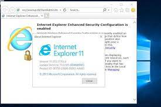

A internet também redefiniu a comunicação. E-mails, chats e fóruns proporcionaram novas formas de interação, conectando pessoas ao redor do mundo em tempo real. Essa nova era de comunicação facilitou não apenas a troca de ideias, mas também o surgimento de comunidades online e redes sociais, que continuariam a evoluir nas décadas seguintes. Além disso, a internet impulsionou o comércio eletrônico, dando origem a empresas que mudariam a forma como compramos e vendemos produtos.
A ideia de fazer compras online começou a ganhar força, estabelecendo as bases para o que hoje conhecemos como e-commerce. Em resumo, a invenção da World Wide Web e a subsequente popularização da internet não apenas mudaram a forma como acessamos informações, mas também transformaram a comunicação, o comércio e as relações sociais, estabelecendo um novo paradigma na sociedade moderna. Essa revolução continua a impactar nossas vidas diariamente, à medida que a internet se torna cada vez mais central em tudo que fazemos.
“Eu imagino um mundo onde cada pessoa pode acessar e compartilhar informações, onde a comunicação não tem fronteiras.”
- Tim Berners-Lee.
